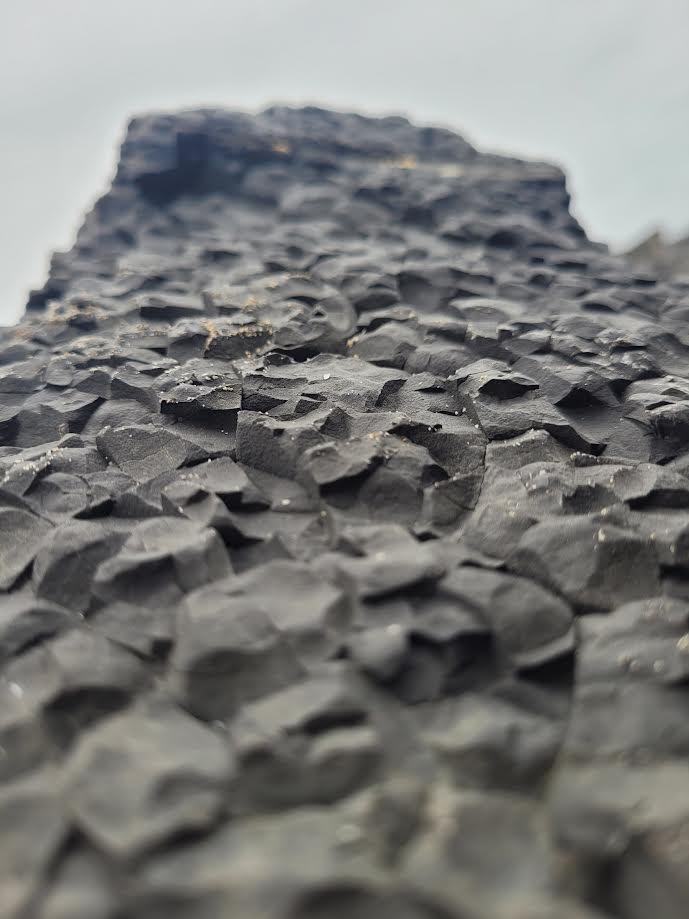

Where to start
The first thing you need to know is the editing tool that youll use, two great editing tools that you can use are:
• Lightroom [Free for mobile] • Photoshop [Paid]
The first thing you need to know is the editing tool that youll use, two great editing tools that you can use are:
• Lightroom [Free for mobile] • Photoshop [Paid]
Before you even start thinking of taking your photo is to set up your camera, the main setting that is a must change is RAW, RAW helps make the photo be more exposed to different editing abilitys and have a wider rage of colours to make your photo pop
When you bring up your RAW file in your selected editing program, you may find yourself wondering where to begin
And while you can technically go in a hundred different directions, I’d recommend you first look at your exposure, which is simply the overall brightness of your image.
First look at your image and ask to your self is it to bright or to dark, you can use the slider and try out different levels of brightness untill you find the one that suits you the best.
White balance is designed to counteract any unwanted color casts in your photos, and once you’ve adjusted your exposure, it’s the next beginner photo editing step I’d recommend.
Now, your camera will have already applied a white balance of some sort, but it often needs adjustment. A perfect white balance shows the whites in your images exactly as they look in real life (though you can always tweak this later for artistic reasons).
Compare the two photos below, one with a too-cool white balance and one with a too-warm white balance:
Contrast refers to the difference between the darks and lights in a photo, where intense darks and intense lights create high contrast, and softer darks and softer lights create low contrast.
RAW files tend to suffer from limited contrast, so it often makes sense to find your contrast slider and increase it until you get a result that you like
By boosting the saturation, you can add pop to your image, and so I do often recommend you add a bit of saturation, It’s easy to go too far so be carful or you’ll end up with an unrealistic result.
Some post-processing programs offer an alternative, called vibrance. This is like saturation, but tends to be more subtle. If saturation isn’t giving you the look you’re after, go ahead and try vibrance instead.
Here’s the final step in this basic photo editing guide. Find the section of your post-processing program that deals with detail and adjust both the sharpness levels and the noise levels.
For RAW photos, sharpening is often necessary. Zoom in to 100% and if you see little white sparkles turn it down . If you have areas you don't want sharpened, like faces, use the Masking slider. Watch out for noise – reduce both luminance and color noise slightly, but don't overdo it or you'll lose sharpness and clarity.
